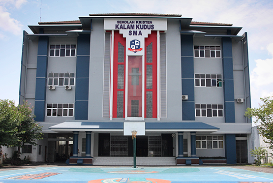

IMLEK SEKOLAH KRISTEN KALAM KUDUS SUKOHARJO

Sebentar lagi kita akan merayakan imlek, kita pasti tau tentang hari raya imlek kan. Sekolah SMA Kristen Kalam Kudus Sukoharjo juga telah mempersiapkan berbagai perlombaan yang seru untuk mengisi kegiatan Imlek. Yuk kita saksikan perlombaan apa saja yang akan sekolah Kristen Kalam Kudus Sukoharjo akan adakan.
Menjelang Imlek SMA Kristen Kalam Kudus Sukoharjo telah mengadakan berbagai event perlombaan berikut perlombaan perlombaan yang diadakan :
1.Angpau Design Competitions
Dalam lomba ini setiap peserta lomba akan berkreatifitas untuk membuat angpau dengan design yang lebih bagus dan lebih menarik tentunya.
2.Kue Keranjang Creations
Lomba kali ini sangat seru dan menyenangkan lho. Bagaimana tidak kita akan mengkreasiakan setiap kue keranjang. Lomba ini juga membutuhkan kreativitas tiap peserta lomba.
3.Mandarin Singing Competitions
Siapa disini yang suka menyanyi sangkat tangan ! Kalian akan bisa mengembangkan talenta tarik suara kalian disini. Di perlombaan ini poeserta diminta untuk menyanyikan lagu mandarin. Lomba ini pasti seru.
4.Fashionize CNY Editions
Jalan sana gaya jalan sini gaya…. Cieee, kira kira lomba apa ini. Yup benar sekali ini adalah lomba fashion show. Kalian bisa membuat video singkat saat kalian melakukan fasion show. Peserta diwjaibkan untuk menggunakan pakaian sopan yang bertema imlek untuk mengikuti lomba ini.
Berikut adalah event event yang diadakan Sekolah Kristen Kalam Kudus Sukoharjo. Setiap lomba yang diadakan memiliki hadiah hadiah lho. Yuk kita ikuti event kali ini. Jangan sampai lupa ya ! Sampai bertemu lagi dengan Sekolah Kristen Kalam Kudus.